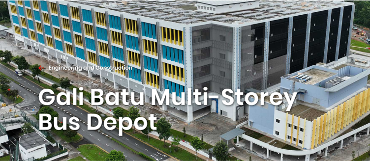

JALAN GALI BATU BUS DEPOT
PROPOSED ERECTION OF A 5-STOREY BUS DEPOT WITH WORKSHOP, ANCILLARY OFFICE, CARPARK, ANCILLARY CANTEEN, ANCILLARY FACILITIES AND A 5-STOREY ANCILLARY WORKER'S DORMITORY (FOR 351 WORKERS) ON LOTS 00073P PT, 01266V,01437L PT, 01834A PT, 01836N PT MK14 AT JALAN GALI BATU(SUNGEI KADUT PLANNING AREA)
Owner: LTA(Land Transport Authority).
Role: Façade Engineering Consultancy Services for façade contractor for varies type of Facade, Glass Window, Aluminum Works, Cladding, Canopies, Louvre and Structural Steelworks
← Back to Projects